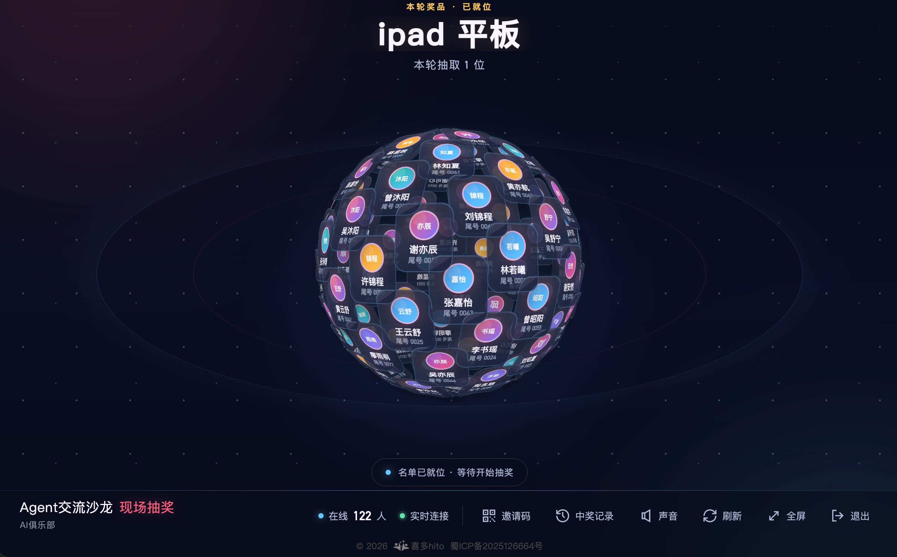

喜多抽奖大屏
把幸运时刻搬到全场中央
从全员手机同步，到现场大屏联动
在喜多的活动抽奖中，现场所有人都可以用手机进入同一场抽奖，一起共享中奖的快乐。
现在，我们在这套体验上继续升级，推出喜多抽奖大屏：手机端继续同步抽奖，大屏则把整个现场连接起来，让抽奖从“每个人都能参与”，进一步变成“全场一起见证”。
手机同步参与，大屏集中呈现
参与者看得见自己的抽奖进度，现场也拥有一块属于所有人的主画面。两种体验同时发生，让抽奖更清楚，也更有气氛。
01 扫码授权，快速开启抽奖大屏
使用方式很简单：先在电脑浏览器打开 lottery.innosync.cn，再由活动管理员进入喜多小程序的“开始抽奖”页面，点击“抽奖大屏”，扫描电脑上的二维码完成授权。

图 1：点击“抽奖大屏”，按提示打开电脑网页并扫码授权。
授权成功后，电脑会自动进入当前活动的抽奖大屏。连接电视、投影仪或会议室屏幕，就可以开始现场展示。
02 抽奖进度与结果，自动同步到全场
抽奖开始后，大屏会跟随小程序中的现场进度自动变化，集中展示参与名单、当前奖品、抽取过程和中奖结果。台下观众不用围在主持人身边，也不用等待额外说明，抬头就能看见抽奖进行到哪一步。

图 2：抽奖大屏集中展示当前奖品、现场参与情况和抽奖状态。
主持人和抽奖嘉宾仍然通过熟悉的小程序完成抽奖管理；电脑端专注做好现场展示。手机负责掌控节奏，大屏负责放大每一个值得欢呼的瞬间。
03 观众扫码即可加入现场抽奖
需要邀请更多现场观众参与时，只需点击抽奖大屏下方工具栏中的“邀请码”，大屏就会显示参与二维码。观众直接用微信扫码，即可进入本场活动的抽奖流程，不必再到群聊里寻找链接。
04 让抽奖真正成为现场高光
从全员手机实时同步，到现场大屏集中呈现，喜多把个人参与感与全场氛围连接在了一起。活动组织者不需要改变原有的抽奖方式，就能拥有更完整、更有仪式感的现场体验。
无论是年会、沙龙、社群见面会，还是品牌活动和会员聚会，幸运揭晓的那一刻，都值得被全场共同看见。
喜多抽奖大屏，把幸运时刻搬到全场中央。
喜多 -- 私域活动运营专家